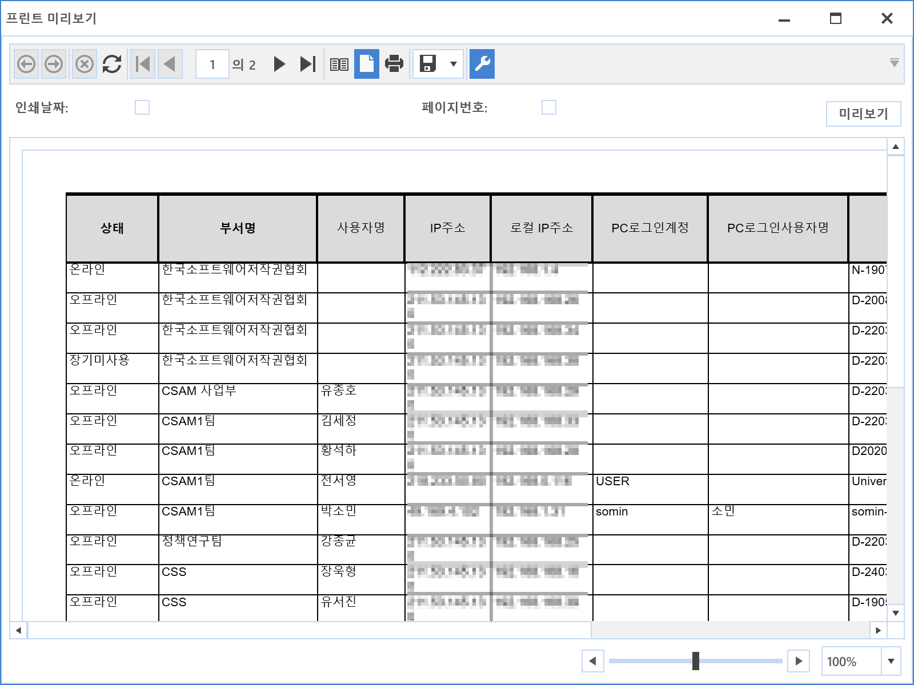

10-5-4. 프린트
10-5-4. 프린트
Source: https://www.sweeper.or.kr/etc/manual/10-5-4.html
10-5-4. 프린트
10. 기타 ›› 10-5. 컬럼 우클릭 ››


-
조회된 Data를 프린트하기 위한 기능으로 조회화면을 클릭한 뒤 프린트 메뉴를 클릭하면 화면 내용이 프린터를 통해 출력됩니다.
-
거의 모든 화면에서 우클릭 메뉴는 활성화 되며, 미지원 메뉴는 비활성화되어있습니다.

© Copyright SWeeper Inc.. All Rights Reserved